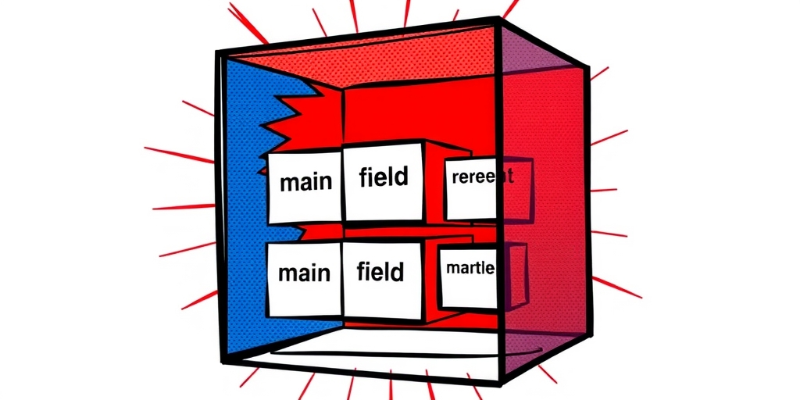
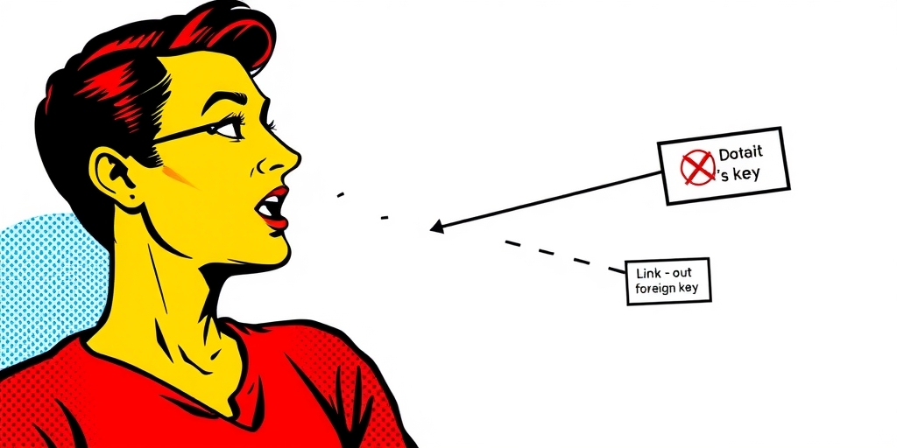

小汪老师的成长洞察 · 属于你的成长专栏
设计原则谁都能讲，但一动手就踩坑。Palantir的本体论施工手册里，正面做法和反面教材对照着看，才发现大多数系统崩塌不是因为原则错了，而是因为命名随意、安全策略后补、数据冗余无文档。这些事第一天做很便宜，第一百天做是灾难。这次对话从存储、结构、链接、反模式到安全，一层层剥开那些“看起来没事，一碰就塌”的设计决策。
记者：小汪老师，上回你讲了四条设计原则——建模真实世界、不重复、只扩展不修改、接口组合。原则听起来都对，但真到动手建本体的时候，第一个决策就让人犯难：数据到底该存一次，还是可以存多次？我看到很多系统里同一个销售额数字在三个地方出现，问开发为什么，他们说“性能需要”。这算不算违反原则？
小汪老师：算，但不算全错。Palantir的结构指南第一条就叫Normalization——每个事实只存一次，存在语义上属于它的那个对象上。比如Manager对象上不要放一个叫directReportCount的字段，手工维护这个数字。每次有人入职离职你都得更新，忘了就错。正确做法是用Derived Property，一个动态计算的属性，每次查询时自动去数Employee对象里有多少个manager链接指向这个Manager。
记者：动态计算听起来很美，但如果Employee数量超过一万条，每次查询都跑一遍count，性能不就崩了？
小汪老师：好问题，这正是Palantir允许Denormalization的原因——但有一个硬条件：必须是“有意识的、有文档记录的、注明哪个是数据源、副本怎么同步”的决定。不是不准抄近路，是抄之前要想清楚为什么抄、以后怎么补。你提到销售额数字在三个地方出现，如果团队说不清哪个是源、哪个是副本、同步频率是多少，那就是无意识的冗余——这种冗余才是真正的债务。
记者：所以冗余本身不是罪，无意识的冗余才是？
小汪老师：对。而且有意识的冗余要付出代价：文档、同步机制、一致性检查。很多人只享受了冗余带来的查询便利，没付后面这些成本。这就是为什么第一天建的时候多花半小时，省下未来成百上千小时。

记者：我在别的数据平台没见过Structs这个概念。Palantir为什么专门设计这样一个结构体？它跟普通嵌套对象有什么区别？
小汪老师：Structs是把一组语义相关的字段打包成一个结构体。比如Address，有street、city、state、postalCode、country——不要拆成五个平铺的属性。一个Address是一个语义单元。但它的真正价值在AI场景。LLM的输出往往带着主结果和metadata——reasoning、source、confidence。如果不打包，你的对象类型上会散落着一堆_lmmConfidence、_lmmReasoning的字段，像碎纸机吐出来的。打包之后，AI的输出是一个叫analysis的结构体，里面有value、confidence、source——干净。
记者：听起来就是嵌套对象，很多系统都有。有什么不同？
小汪老师：关键在main field的设计。你可以指定结构体里的一个字段作为主字段。指定之后，这个结构体在大多数接口里表现得就像那个主字段本身——比如address.street对下游消费者来说等于address。但想看完整地址信息的时候点开依然是完整的结构体。这是“按需展开”的信息密度管理。普通嵌套对象没有这种“默认展开一级、深度展开可选”的机制，结果要么信息过载，要么信息隐藏太深。
记者：如果下游系统不支持Structs，只认平铺字段怎么办？
小汪老师：这正是main field的兼容性价值。对老旧系统，你只暴露main field，它看到的就是一个普通字符串。对能理解结构体的新系统，你暴露完整结构。平滑过渡，不用改Schema。

记者：链接是本体论的骨架。Palantir提供了两种链接类型——Direct Link和Object-backed Link。什么时候用哪种？我看到很多项目在这个选择上反复纠结。
小汪老师：Direct Link就是Employee直连Department——关系本身没有附加信息。Object-backed Link是关系本身有metadata——比如Employee到Venture之间，不是简单的“谁在哪个项目组”，而是“以什么角色、从哪天开始、占多少比例”。这时候中间需要一个Venture Staffing对象专门存这些。两种视图都可以暴露——有的工作流只需要Employee到Venture这条直连线，有的需要点开中间层看细节。不是二选一，是并存。
记者：但很多架构师习惯把数据库的外键直接翻译成Ontology链接。Palantir文档里专门警告不要这么做，为什么？
小汪老师：因为两张表之间有个foreign key，不代表这两个概念在业务上有语义关联。数据库设计是为了存储效率和约束完整性，本体论设计是为了表达业务知识。一个订单表里可能有创建人ID、审批人ID、关闭人ID，都指向用户表，但业务上“创建”“审批”“关闭”是三种完全不同的关系。如果你只建一条从Order到User的链接，业务含义就丢了。正确做法是建三条不同命名的链接：createdBy、approvedBy、closedBy。
记者：那如果业务上确实有关联，但数据库里没建外键呢？
小汪老师：以业务语义为准，不以数据库约束为准。本体论的设计主权在业务端，不在存储端。这是Palantir反复强调的：不要让你的知识图谱被数据库设计绑架。
记者：反模式那篇文档列了七八个坑。如果只挑最致命的三个，你会选哪几个？
小汪老师：第一个，System Silos——同一个实体在三个源系统里叫三个名字，你就建了三个对象类型。HR系统里一个Employee，门禁系统里又一个，项目管理工具里第三个。后果是数据割裂，Agent不知道该信哪个。解法是建一个统一的Employee类型，用Pipeline合并，冲突时声明谁的字段优先。第二个，Kitchen Sink——不敢删字段，把ETL的时间戳、内部流水号、表版本号全部暴露成对象属性。最终用户看到的不是属性，是噪音。判断标准很简单：会有人想搜索、过滤、或者用它做决策吗？不会就藏起来。
记者：第三个呢？
小汪老师：Misnomer——命名混乱。这是最被低估的坑，也是Palantir专门强调“最难后期修复”的事。Item不叫Item，叫Product。value不叫value，叫monetaryValue。link不叫relatedItems，叫supplier。命名不是写给机器看的——机器不在乎你叫什么。命名是写给那个第一次打开Ontology的人看的，让他凭直觉就知道去哪里搜什么。还有日期命名——全Ontology统一用createdDate还是统一用createdAt，不要在同一个系统里混用三种格式。
记者：为什么Misnomer最难修复？改个名字不就是重构一下吗？
小汪老师：因为Ontology的命名一旦被外部系统、API、Agent引用，改名就等于断链。所有下游依赖都会摔。代码重构你可以跑测试，Schema改名你跑不了所有下游的兼容性测试。Palantir说得很直白：第一天就定命名规范，全本体统一。第一天做很便宜，第一百天做是灾难。
记者：安全设计在Ontology层有什么特殊要求？我看到有些系统为了限制VIP数据访问，直接建了两个对象类型——PublicPatient和RestrictedPatient。这有什么问题？
小汪老师：这是最典型的错误。建两个类型意味着两份Schema要分别维护。加一个新属性如果不小心只加了一个，VIP病人的记录里就丢了那个字段。正确做法是一个Patient类型，用Row-level Security控制谁看得见VIP病人，用Column-level Security控制谁看得见clinicalNotes和mentalHealthRecords。两种策略叠加就是Cell-level——同一个表格里，不同人看到的行和列都不一样，但只维护一份Schema。
记者：那安全策略应该从宽松开始，出事了再收窄吗？
小汪老师：绝对不要。安全策略从严格开始逐步放宽，不要从宽松开始出事了再收窄。一旦数据泄露，信任就没了，收窄只是补救，不是预防。Ontology的安全还有一个特点：安全边界应该跟着业务边界走，不应该跟着数据库表走。区域经理看自己区域的客户数据——这个规则不需要翻译成“数据集A里region_id字段的前100行”。它可以直接表达为“这个经理可以看region字段等于他所属区域的Customer对象”。这叫语义安全。
记者：如果业务边界和安全边界冲突怎么办？比如一个区域经理同时负责两个区域，但安全策略只允许单值匹配？
小汪老师：这就是设计时要解决的问题。Palantir的安全模型支持复杂规则，你可以定义“经理可以看region字段属于他授权区域列表的Customer”。关键是安全边界必须表达业务逻辑，而不是技术妥协。如果你发现安全策略写不出来，那可能是本体设计本身没有正确反映业务边界——这时候要改的是本体，不是安全规则。
尾声
Ontology和代码不一样：代码可以重构，Schema动了，所有依赖它的人和Agent都会跟着摔。第一天建的时候多花半小时，省下的是未来所有人成百上千小时的纠错和解释。命名、安全、冗余文档——这些不是技术细节，是文明的基建。系统崩塌很少因为一个惊天bug，大多因为一百个小妥协的累积。下次你动手建本体之前，先问自己三个问题：这个字段有人会搜吗？这个名字三年后别人还能一眼看懂吗？这个安全规则是跟着业务走的还是跟着表走的？答不上来，就停下来想清楚再动。
小汪老师的成长洞察 · 属于你的成长专栏